REVOLUCIÓN PERMANENTE
El siglo XIX
Lo que he denominado la ruptura de la tradición, señalada por la época de la gran Revolución francesa, hizo cambiar totalmente la situación en que vivieron y trabajaron los artistas. Las exposiciones y las academias, los críticos y los entendidos hicieron cuanto les fue posible por establecer una distinción entre el Arte, con A mayúscula, y el mero ejercicio de un arte, fuese el del pintor o el del arquitecto. Ahora, esos cimientos sobre los que el arte había permanecido fueron minados desde otra parte. La revolución industrial comenzó a destruir las propias tradiciones del sólido quehacer artístico; la obra manual dio paso a la producción maquinista; el taller, a la fábrica.
Los resultados más inmediatos de este cambio se hicieron visibles en arquitectura. La falta de una sólida preparación, combinada con una extraña insistencia en el estilo y la belleza, casi la hicieron sucumbir. La cantidad de edificios construidos en el siglo XIX probablemente fue mayor que la de todas las épocas anteriores juntas. Fue la etapa de la gran expansión de las ciudades en Europa y América, que convirtió campos enteros en áreas de construcción. Pero esta época de actividad constructora ilimitada carecía de estilo propio. Las reglas de los libros de consulta y de modelos, que tan admirablemente habían cumplido su papel en la época anterior, fueron, de ordinario, desdeñadas como demasiado sencillas y no artísticas. El hombre de negocios o la junta de la ciudad que proyectaban una nueva fábrica, estación de ferrocarril, escuela o museo, querían tener Arte a cambio de su dinero. Consiguientemente, cuando otras consideraciones habían quedado satisfechas, se le encargaba al arquitecto que realizara una fachada en estilo gótico, que le diera a un edificio la apariencia de un castillo normando, de un palacio del Renacimiento, o incluso de una mezquita oriental. Ciertos convencionalismos eran más o menos aceptados, pero no contribuían en mucho a mejorar las cosas. Las iglesias se construían más a menudo en estilo gótico, porque éste había sido el predominante en la llamada época de la fe. Para los teatros y palacios de ópera, el teatral estilo barroco es el que, con frecuencia, se consideraba como el más adecuado, mientras que los palacios y ministerios se creía que parecerían más graves bajo las formas majestuosas del Renacimiento italiano
Sería injusto concluir en que no existieron buenos arquitectos en el siglo XIX. Los hubo, ciertamente, pero la situación en que se hallaba su arte operó contra ellos. Cuanto más concienzudamente estudiaban para imitar los pasados estilos, menos fácilmente se adaptaban sus proyectos a los fines a que se dirigían. Y si decidían hacer caso omiso de las exigencias de estilo que tenían que adoptar, las consecuencias no acostumbraban ser demasiado felices para ellos. Algunos arquitectos del siglo XIX consiguieron encontrar un camino entre estas dos incómodas alternativas, creando obras que no eran remedos de lo antiguo ni caprichosas invenciones. Sus construcciones se han convertido en hitos de las ciudades donde se elevan, y hemos llegado a habituarnos a ellas como si formaran parte del escenario natural. Tal cosa sucede, por ejemplo, con el Parlamento de Londres (ilustración 327), cuya historia es característica de las dificultades en que tuvieron que trabajar los arquitectos de la época. Cuando la vieja Cámara se quemó en 1834, se organizó un certamen, y la decisión del jurado recayó sobre el proyecto de sir Charles Barry (1795-1860), un experto en el estilo Renacimiento. Sin embargo, se consideró que las libertades civiles inglesas descansaban sobre los fundamentos del medievo, y que lo lógico y oportuno era erigir la sede de la libertad inglesa en estilo gótico; punto de vista que, por otra parte, también fue unánimemente aceptado cuando la restauración de la Cámara tras su destrucción por las bombas alemanas fue discutida al concluir la última guerra. Consiguientemente, Barry tuvo que aceptar el asesoramiento de un experto en los detalles góticos: A. W. N. Pugin (1812-1852), cuyo padre había sido un ardoroso campeón del renacer gótico. La colaboración consistió poco más o menos en lo siguiente: que Barry decidiría la estructura y ordenamiento del edificio, mientras Pugin cuidaría de la decoración de la fachada y del interior. Difícilmente puede parecernos a nosotros muy satisfactorio este procedimiento, pero el resultado no fue demasiado malo. Vista desde lejos, a través de las nieblas londinenses, la silueta del edificio de Barry no carece de cierta dignidad, y, vistos desde los barrios próximos, los pormenores góticos conservan algo todavía de su romántico atractivo.
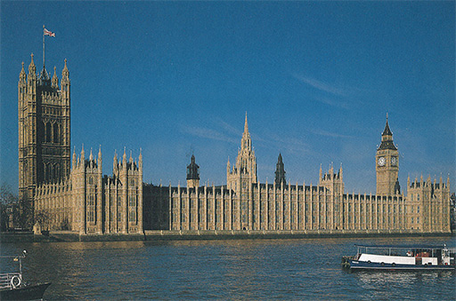
327 Charles Barry, Augustus Welby y Northmore Pugin. El Parlamento, Londres, 1835.
En pintura y escultura, los convencionalismos estilísticos desempeñaron un papel menos destacado, lo que puede hacernos creer que la ruptura con la tradición afectó en menor grado a estas artes; pero no fue así. La vida de un artista no por eso dejó de tener sus inquietudes y penalidades, pero había algo que podía considerarse superación del «feliz tiempo pasado»: que ningún artista tenía que preguntarse a qué había venido al mundo. En algunos aspectos, su obra se hallaba tan bien definida como la de cualquier otra profesión. Siempre existían retablos de iglesia que realizar, retratos que pintar; y la gente adquiría cuadros para sus mejores salones, o encargaba frescos para sus residencias campestres. En todas estas tareas podía trabajar más o menos de acuerdo con las líneas preestablecidas, entregando los productos que el cliente esperaba recibir. Es cierto que podía producir obras indiferentes, o realizar las que se le encargaban tan superlativamente bien que la tarea que tenía entre manos fuera nada menos que el punto de partida de una obra maestra trascendental. Pero esta posición ante la vida no siempre era sólida. Precisamente fue la sensación de seguridad lo que los artistas perdieron en el siglo XIX. La ruptura con la tradición había abierto un campo ilimitado para escoger; en ellos estaba decidir si querían pintar paisajes o dramáticas escenas del pasado, si querían escoger temas de Milton o de los clásicos, si querían adoptar el severo estilo neoclásico de David o la modalidad fantasmagórica de los maestros románticos. Pero cuanto mayor se había hecho el campo para elegir, menos fácil se había vuelto el que los gustos del artista coincidieran con los de su público. Los que compraban cuadros generalmente tenían una idea determinada en la cabeza, buscando algo muy similar a lo que habían visto en alguna otra parte. En el pasado, esta demanda había sido fácil de satisfacer porque, aun cuando las obras de un artista se diferenciaran mucho en cuanto a mérito artístico, las distintas creaciones de una época se parecían entre sí en muchos aspectos. Ahora, cuando esta unidad de tradición había desaparecido, las relaciones del artista con su cliente pasaron a ser demasiado tirantes por lo general. El gusto del comprador se había fijado en un sentido; el artista no se sentía conforme con él para poder satisfacer la demanda. Si se veía obligado a atenderla porque necesitaba dinero, sentía que había hecho concesiones, y perdía en su propia estimación y en la de los demás. Si decidía no seguir más que su voz interior y rechazar cualquier encargo que no coincidiese con su idea del arte, se hallaba literalmente en peligro de morirse de hambre. Así, una profunda hendidura se abrió en el siglo XIX entre aquellos artistas cuyo temperamento o convicciones les permitían seguir los convencionalismos y satisfacer las demandas del público y aquellos otros que se preciaban de su propio aislamiento, deliberadamente aceptado. Lo que empeoró las cosas fue que la revolución industrial y la decadencia del oficio, la aparición de una nueva clase media sin tradición, y la producción de obras a bajo precio que se enmascaraban con el nombre de Arte, acabaron por desbaratar el gusto del público.
El recelo entre artistas y público fue recíproco por lo general. Para el hombre de negocios, un artista era poco más que un impostor que pedía precios absurdos por algo que apenas si podía considerarse como un trabajo honrado. Entre los artistas, por otra parte, se convirtió en un pasatiempo épater le bourgeois, dejarlo perplejo y estupefacto. Los artistas empezaron a sentirse una raza aparte, dejándose crecer la barba y los cabellos, vistiendo de terciopelo o pana, con sombreros de alas anchas y grandes lazos anudados de cualquier modo, y, por lo general, extremaron su desprecio hacia los convencionalismos de la gente «respetable». Este estado de cosas era inaudito, pero seguramente inevitable. Y debe reconocerse que, aunque la carrera de un artista acostumbró tropezar con los más peligrosos obstáculos, las nuevas condiciones también tuvieron su compensación. Los peligros eran evidentes. El artista que vendía su alma, condescendiendo con los gustos de quienes carecían de ellos, estaba perdido. Así, fue el artista quien a veces dramatizó su situación, creyéndose un genio por la sola razón de no encontrar compradores. Pero la situación sólo fue desesperada para los carentes de temperamento, pues la amplitud del terreno en que escoger y la independización de los antojos de los clientes, alcanzadas a tan alto precio, también poseían sus ventajas. Por primera vez, acaso, llegó a ser verdad que el arte era un perfecto medio para expresar el sentir individual; siempre, naturalmente, que el artista poseyera ese sentir individual al que dar expresión.
A muchos esto puede parecerles una paradoja. Consideran todo arte como un medio de expresión, y en cierto modo están en lo cierto. Pero la cuestión no es tan sencilla como de ordinario se cree. Es evidente que un artista del Egipto antiguo tuvo muy pocas oportunidades de expresar su personalidad; las reglas y convencionalismos de su estilo fueron tan estrictas que tuvo muy poco campo para escoger. Un sencillo ejemplo lo aclarará. Si decimos que una mujer expresa su personalidad en su manera de vestirse, damos a entender que su elección indica sus inclinaciones y preferencias. No necesitamos más que observar a una conocida nuestra en el momento de comprar un sombrero y tratar de descubrir por qué rechaza éste y elige aquel otro. Esto siempre tendrá algo que ver con la manera de verse a sí misma y de cómo desea que la vean los demás, y cualquier acto de elección semejante puede revelarnos algún rasgo de su personalidad. Si ella tiene que usar uniforme, todavía puede quedarle alguna posibilidad de expresión, pero evidentemente en mucho menor grado. El estilo es una especie de uniforme. Ciertamente, sabemos que llegó un momento en el que las posibilidades personales del artista aumentaron, y, con ellas, los medios para que expresara su peculiar carácter. Cualquiera puede advertir que el tipo humano de Fra Angélico fue distinto del de Vermeer van Delft. Y sin embargo, ninguno de estos artistas escogió nada deliberadamente para expresar su personalidad. Lo hicieron tan sólo espontáneamente, como nosotros nos expresamos a nosotros mismos en cualquier cosa que hagamos, lo mismo al encender la pipa que al correr detrás del autobús. La idea de que la verdadera finalidad del arte era expresar la personalidad sólo podía ganar terreno cuando el arte hubiese perdido sus otros fines. Sin embargo, tal como se desarrollaron las cosas, esta situación fue natural y valiosa, pues lo que las personas que se preocupaban por el arte iban a buscar a las exposiciones y los estudios de los artistas no era ya el despliegue de una habilidad adocenada —que se había vuelto demasiado vulgar como para merecer que se le prestase atención—, sino que querían que el arte les hiciera entrar en contacto con hombres con los que valdría la pena conversar; creadores cuyas obras pusieran de manifiesto una sinceridad incorruptible, artistas que no se contentaran con perseguir unos efectos y que no darían una sola pincelada sin interrogarse a sí mismos para saber si la misma satisfacía su conciencia artística. En tal aspecto, la pintura del siglo XIX difiere considerablemente de la historia del arte tal como la hemos visto desarrollarse hasta ahora. En las épocas anteriores, corrientemente eran los grandes maestros poseedores de una técnica superior quienes recibían los encargos más importantes, y por ello se hacían famosos. Pensemos tan sólo en Giotto, Miguel Ángel, Holbein, Rubens o incluso Goya. Esto no quiere decir que no se produjeran tragedias o que no hubiera artistas menospreciados en sus propios países, sino que, en general, el artista y su público compartían ciertos supuestos y, en consecuencia, compartían también una misma escala de valoración. Hasta el siglo XIX no se abrió un abismo patente entre los artistas triunfantes —que contribuyeron a la creación de un arte oficial— y los inconformistas, que por lo general no fueron apreciados hasta después de su muerte. Esto originó una extraña paradoja: incluso los historiadores actuales saben poco acerca del arte oficial. Cierto es que muchos de nosotros estamos familiarizados con algunas de sus obras, monumentos a grandes personajes en plazas públicas, murales en los ayuntamientos o vidrieras en iglesias y universidades, pero en su mayoría han adquirido un aspecto tan rancio y trasnochado a nuestros ojos que no les prestamos mayor atención que a los grabados de las en otro tiempo famosas obras de exposición que adornan los salones de algún anticuado hotel.
Quizá haya alguna razón para un descuido tan frecuente. Al hablar del cuadro en que se ve a Carlos I enfrentándose al Parlamento, pintado por Copley (ilustración 315), he mencionado que este esfuerzo para visualizar un momento dramático de la historia del modo más exacto posible produjo una impresión duradera, y que durante todo un siglo muchos artistas dedicaron arduos esfuerzos a tales cuadros históricos, en los que aparecían hombres del pasado —Dante, Napoleón o George Washington— en algún momento crucial de sus vidas. Podría haber añadido que estos cuadros teatrales tuvieron mucho éxito en las exposiciones, pero que bien pronto perdieron su atractivo. Nuestras ideas acerca del pasado tienden a cambiar con rapidez. La riqueza de detalles en trajes y escenarios pronto adquiere un aspecto poco convincente, y los gestos heroicos se tornan melodramáticos y afectados. Es bastante probable que llegue un momento en que estas obras sean redescubiertas, y en que sea posible discernir entre las realmente malas y las meritorias, puesto que es evidente que no todo ese arte fue tan vacío y convencional como hoy tendemos a creer. Y sin embargo, posiblemente seguirá siendo verdad que la palabra Arte adquirió un sesgo diferente a partir de la gran Revolución, y que en el siglo XIX la historia del arte no podrá consistir nunca en la de los maestros más famosos y mejor pagados de la época. Se nos antoja más la historia de un grupo de hombres solitarios, que tuvieron el valor y la perseverancia de opinar por sí mismos así como de examinar de modo osado y crítico las convenciones existentes para abrir de este modo nuevos horizontes a su arte.
Los episodios más dramáticos de esta evolución acaecieron en París, pues esta ciudad se había convertido en la capital artística de la Europa del siglo XIX, tal como lo fueran Florencia y Roma en los siglos XV y XVII, respectivamente. Artistas de todo el mundo afluyeron a París para estudiar con renombrados maestros, y, sobre todo, para intervenir en las interminables discusiones que acerca de la naturaleza del arte se desarrollaban en los cafés de Montmartre, donde se estaba forjando penosamente una concepción artística nueva.
El más destacado pintor tradicionalista, en la primera mitad del siglo XIX, fue Jean-Auguste-Dominique Ingres (1780-1867). Discípulo y seguidor de David, fue, como su maestro, un gran admirador del arte heroico de la antigüedad clásica. En sus enseñanzas insistió en la necesidad de una disciplina de precisión absoluta en el estudio del natural y combatió la improvisación y el desaliño. La ilustración 328 muestra su maestría en el modelado de las formas y la fría claridad de su composición. Es fácil comprender que muchos artistas envidiaran la seguridad de la técnica de Ingres y respetaran su autoridad, aun cuando no compartieran sus puntos de vista. Pero también es comprensible que incluso sus más entusiastas contemporáneos acabasen hartos de tanta perfección.
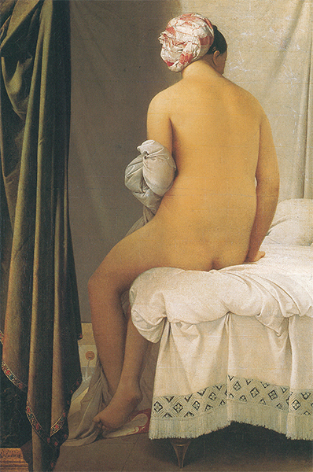
328 Jean-Auguste-Dominique Ingres, La bañista de Valpinçon, 1808. Óleo sobre lienzo, 146 x 97,5 cm; Museo del Louvre, París.
Todos los adversarios de Ingres se unieron en torno al estilo de Eugéne Delacroix (1798-1863). Delacroix pertenecía a la estirpe de grandes revolucionarios del país de las revoluciones. Hombre de compleja personalidad, los objetos de su interés eran múltiples y diversos, y en su excelente Diario da a entender que no le hubiera complacido ser encasillado como un fanático rebelde. Si se le adjudicó este papel fue porque no podía aceptar las normas de la Academia. Delacroix no soportó toda aquella teatralería acerca de griegos y romanos, con la insistencia respecto a la corrección en el dibujo y la constante imitación de las estatuas clásicas. Consideró que, en pintura, el color era mucho más importante que el dibujo, y la imaginación que la inteligencia. En tanto que David y su escuela cultivaban el gran estilo y admiraban a Poussin y Rafael, Delacroix sacaba de quicio a los entendidos, prefiriendo a los venecianos y a Rubens. Estaba cansado de los temas cultos que la Academia quería que plasmaran los pintores, por lo que en 1832 se fue al norte de África a estudiar el brillante colorido y los románticos ornamentos del mundo árabe. Cuando vio en Tánger torneos a caballo, anotó en su Diario: «Desde el primer momento se encabritaban, y luchaban con una furia que me hizo temer por sus jinetes, pero era magnífico para pintarlo. Estoy seguro de que he sido testigo de una escena tan extraordinaria y fantástica como las que… Rubens podía haber imaginado.» La ilustración 329 muestra uno de los frutos de este viaje. Todo lo que hay en el cuadro es un mentís a cuanto habían predicado pintores como David e Ingres; no hay en él precisión de contornos ni desnudos modelados esmeradamente por degradación de tonos de luz y sombra, ni forzado equilibrio en la composición, ni siquiera se trata de un tema edificante o patriótico. Lo único que se ha propuesto el pintor es hacernos participar de un instante intensamente sugestivo y compartir con él su deleite ante el movimiento y atractivo de la escena, con la caballería árabe galopando y el magnífico pura sangre encabritado en el primer término. Delacroix fue quien aclamó en París el cuadro de Constable (ilustración 325) aunque, dada su personalidad y su preferencia por los temas románticos, tal vez se asemeje más a Turner.
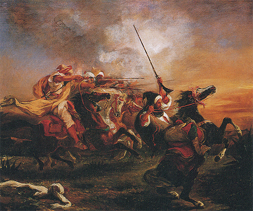
329 Eugène Delacroix, Caballería árabe a la carga, 1832. Óleo sobre lienzo, 60 x 73,2 cm; Museo Fabre, Montpellier.
Sea como fuere, sabemos que Delacroix admiraba de verdad a un paisajista francés de su generación, de cuyo arte se podía decir que constituía un puente entre estos estilos tan distintos de acercarse a la naturaleza. Era Jean-Baptiste Camille Corot (1796-1875). Al igual que Constable, Corot estaba decidido a plasmar la realidad tan verazmente como le fuera posible, pero la verdad que deseaba captar era algo diferente. La ilustración 330 muestra que se concentraba menos en el detalle que en la forma y la tonalidad generales de sus motivos, para transmitir el calor y la quietud de un día de verano en el sur.
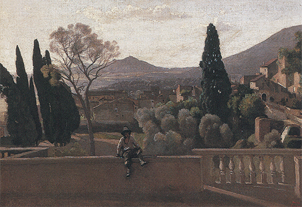
330 Jean-Baptiste Camille Corot, Tívoli, los jardines de Villa d’Este, 1843. Óleo sobre lienzo, 43,5 x 60,5 cm; Museo del Louvre, París.
Resulta que unos cien años antes Fragonard había elegido también un tema del parque de Villa d’Este, cerca de Roma (ilustración 310), y quizá valga la pena hacer una pausa para comparar estas y otras imágenes, tanto más cuanto que el paisaje estaba destinado a convertirse en el tema más importante del arte del siglo XIX. Es evidente que Fragonard buscaba la variedad, mientras que Corot perseguía una claridad y equilibrio que puede recordarnos remotamente a Poussin (ilustración 254) y a Claude Lorrain (ilustración 255). Sin embargo, la luz radiante y la atmósfera que llenan el cuadro de Corot se logran con medios muy distintos. Aquí puede ayudarnos de nuevo la comparación con Fragonard, porque el procedimiento de Fragonard le obligó a concentrarse en una cuidadosa gradación de tonos. Lo que tenía a su disposición como dibujante era el blanco del papel y varias intensidades de tierras; pero fijémonos, por ejemplo, en la pared del primer término y observemos cómo esto le era suficiente para expresar el contraste entre la luz y la sombra. Corot logró efectos similares con el uso de su paleta, y los pintores saben que éste no es un logro menor. La razón es que, con frecuencia, el color entra en conflicto con las gradaciones de tonos en las que se apoyaba Fragonard.
Podemos recordar en este punto el consejo que Constable recibió, y que rechazó, de pintar el primer término de color pardo claro tal como habían hecho Claude Lorrain y otros pintores. Este conocimiento convencional residía en la percepción de que los verdes puros tienden a chocar con otros colores. Por mucho que una fotografía nos parezca fiel al tema (como la de la ilustración 302), la intensidad de sus colores tendría un efecto destructivo sobre la suave gradación de tonos que también sirvió a Caspar David Friedrich (ilustración 326) para conseguir la sensación de lejanía. Más aún: si observamos La carreta de heno de Constable (ilustración 325), veremos que también él apagaba el color del primer término y del follaje para mantenerse dentro de una gama tonal unificada. Aparentemente, Corot captó la luz y la bruma luminosa de la escena con nuevos medios. Trabajó con una gama de grises plateados que no acaba de absorber los colores, sino que los mantiene en armonía sin alejarse de la verdad visual. Cierto que, al igual que Claude Lorrain y Turner, nunca dudó en introducir en sus cuadros figuras del pasado clásico o bíblico. De hecho, fue esta inclinación poética la que a la larga le proporcionó fama internacional.
Pese a que la callada maestría de Corot era querida y admirada por sus colegas más jóvenes, ellos no quisieron seguirle por ese camino. De hecho, el siguiente cambio tuvo que ver principalmente con los convencionalismos que regían el tema. En las academias todavía imperaba la idea de que los cuadros serios debían representar personajes serios, y que los trabajadores o los campesinos eran temas apropiados para las escenas de género, en la tradición de los maestros holandeses. Durante la época de la revolución de 1848, un grupo de artistas se congregó en la aldea francesa de Barbizon para seguir el programa de Constable y observar la naturaleza con ojos limpios. Uno de ellos, Jean-François Millet (1814-1875), resolvió ampliar este programa del paisaje a las figuras; se propuso pintar escenas de la vida de los campesinos, mostrándolos tal como eran, esto es, pintar hombres y mujeres trabajando en el campo. Es curioso advertir que esto haya podido considerarse revolucionario, pero en el arte del pasado los campesinos eran considerados como paletos jocosos tal como Bruegel los había pintado (ilustración 246). La ilustración 331 muestra el famoso cuadro de Millet Las espigadoras. Aquí no se halla representado ningún incidente dramático, nada que pueda considerarse anecdótico: no se trata más que de tres atareadas jornaleras sobre una llanura que se está segando. No son hermosas ni atractivas. No existe la sugerencia de un idilio campestre en el cuadro; estas campesinas se mueven lenta y pesadamente, entregadas de lleno a su tarea. Millet ha procurado resaltar su sólida y recia constitución y sus premeditados movimientos, modelándolas vigorosamente con sencillos contornos contra la llanura, a la brillante luz solar. Así, sus tres campesinas adquieren una gravedad más espontánea y verosímil que la de los héroes académicos. La colocación, que parece casual a primera vista, mantiene esta impresión de equilibrio apacible. Existe un ritmo calculado en el movimiento y distribución de las figuras que da consistencia a todo el cuadro y que nos hace percibir que el pintor consideró la labor de las espigadoras como una labor de significación noble.
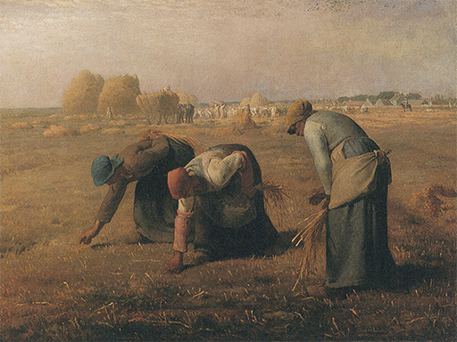
331 Jean-François Millet, Las espigadoras, 1857. Óleo sobre lienzo, 83,8 x 111 cm; Museo de Orsay, París.
El pintor que dio nombre a este movimiento fue Gustave Courbet (1819-1877). Cuando inauguró una exposición individual de sus obras en una barraca de París, en 1855, la tituló Le Réalisme, G. Courbet. Su realismo señalaría una revolución artística. Courbet no quería ser discípulo más que de la naturaleza. Hasta cierto punto, su temperamento y su programa se parecieron a los de Caravaggio (ilustración 252): no deseaba la belleza, sino la verdad. En el cuadro de la ilustración 332 se representó a sí mismo de excursión por el campo con los utensilios de pintar a las espaldas, siendo saludado respetuosamente por un amigo y cliente. Tituló el cuadro Bonjour, Monsieur Courbet. A cualquiera acostumbrado a las escenas teatrales del arte académico, este cuadro le parecería francamente infantil. No existen en él elegantes actitudes, ni fluidez de líneas ni colores sugestivos. Comparada con su tosca composición, incluso la de Las espigadoras, de Millet, parece muy estudiada. La idea misma de un pintor autorretratándose en mangas de camisa, como un vagabundo, debió ser considerada una ofensa por los artistas respetables y sus admiradores. Pero esto fue, de todos modos, lo que Courbet se propuso conseguir, pues quiso que su cuadro constituyera una protesta contra los convencionalismos aceptados en su tiempo, que sacara al burgués de sus casillas y proclamara el valor de una sinceridad artística sin concesiones contra el hábil manejo de la rutinaria habilidad tradicional. Indudablemente, los cuadros de Courbet son sinceros. «Confío siempre —escribió en 1854 en una carta muy característica— ganarme la vida con mi arte sin tener que desviarme nunca de mis principios ni el grueso de un cabello, sin traicionar mi conciencia ni un solo instante, sin pintar siquiera lo que pueda abarcarse con una mano sólo por darle gusto a alguien o por vender con más facilidad.» La deliberada renuncia de Courbet a los efectos fáciles, así como su resolución de reflejar las cosas tal como las veía, estimuló a muchos otros a reírse de los convencionalismos y a no seguir más que su propia conciencia artística.
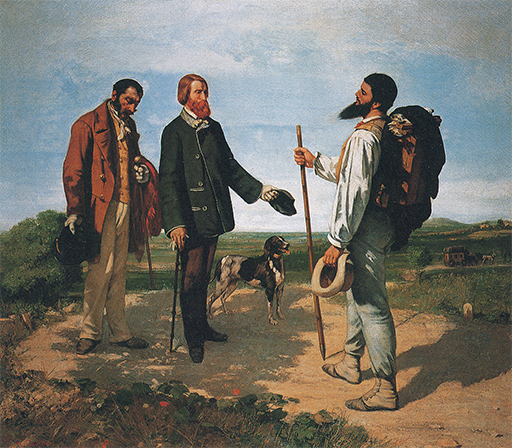
332 Gustave Courbet, El encuentro, o Bonjour, Monsieur Courbet, 1854. Óleo sobre lienzo, 129 x 149 cm; Museo Fabre, Montpellier.
La misma preocupación por la sinceridad, la misma disconformidad con la insoportable y teatral ostentación del arte oficial que guió a los pintores de la escuela de Barbizon y a Courbet hacia el realismo, hizo que un grupo de pintores ingleses emprendieran un camino distinto. Estos pintores meditaron acerca de las causas que habían llevado al arte por tan peligrosa ruta; sabían que las academias declaraban representar la tradición de Rafael y lo que se conocía con el nombre de gran estilo. Si esto era cierto, evidentemente el arte había tomado un giro erróneo con y a través de Rafael. Fueron él y sus continuadores quienes exaltaron el procedimiento de idealizar la naturaleza, conduciendo hacia lo bello a expensas de la realidad. Si el arte tenía que ser reformado, era preciso, por consiguiente, retroceder más allá de Rafael, retornar a la época en la que los artistas todavía eran artesanos fieles a un Dios, en que se esforzaban cuanto podían en copiar la naturaleza, no pensando en la fama terrenal sino en la mayor gloria del Dios. Creyendo que el arte se había vuelto insincero, por influjo de Rafael, y que su misión era volver a la edad de la fe, este grupo de amigos se dio a sí mismo el nombre de Hermandad Prerrafaelista. Uno de sus miembros mejor dotados fue el hijo de un refugiado italiano, Dante Gabriel Rossetti (1828-1882). La ilustración 333 muestra un cuadro con el tema de la anunciación, de Rossetti. Generalmente, este tema era representado de acuerdo con el modelo de las imágenes medievales, como la de la ilustración 141. El propósito de Rossetti de retornar al espíritu del medievo no significa que quisiera imitar los cuadros de entonces; lo que deseó fue emular su actitud, leyendo fervorosamente el relato bíblico e imaginándose esta escena en que el ángel se presentó a la Virgen dirigiéndole su salutación: «Ella se conturbó por estas palabras, y discurría qué significaría aquel saludo» (Lucas 1, 29). Podemos observar cómo se esforzó Rossetti en ser sencillo y sincero en su nueva concepción, y cuánto procuró hacernos ver el relato antiguo con el espíritu más puro. Pero precisamente por su intento de plasmar la naturaleza tan fielmente como los admirados florentinos del Quattrocento, algunos considerarán que la Hermandad Prerrafaelista se propuso un fin inalcanzable. Admirar la fe ingenua de los llamados primitivos (como se solía llamar entonces a los pintores del siglo XV) es una cosa, y esforzarse uno mismo en serlo es otra, pues se trata de cualidades que ni con la mejor voluntad del mundo pueden conseguirse. Lejos de carecer de artificiosidad, los cuadros de los prerrafaelistas la tienen en extremo. Así, mientras su punto de partida fue muy semejante al de Millet y Courbet, su honrado intento les colocó en un callejón sin salida. Su propósito de convertirse en nuevos primitivos era demasiado contradictorio en sí como para triunfar. El ya aludido de los maestros franceses en explorar la naturaleza, desdeñando los convencionalismos, demostró ser mucho más fructífero.
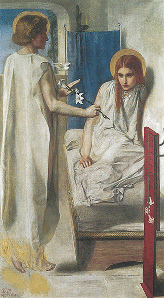
333 Dante Gabriel Rossetti, Ecce Ancilla Domini, 1849-1850. Óleo sobre lienzo, montado sobre madera, 72,6 x 41,9 cm; Tate Gallery, Londres.
La tercera oleada revolucionaria en Francia (tras la primera, de Delacroix, y la segunda, de Courbet) fue iniciada por Édouard Manet (1832-1883) y sus amigos. Estos artistas aceptaron seriamente el programa establecido por Courbet, despreciando los convencionalismos pictóricos por ajados y carentes de sentido. Hallaron que la pretensión del arte tradicional de haber descubierto el modo de representar la naturaleza tal como la vemos descansaba en una concepción errónea. Todo lo más, concederían que el arte tradicional encontró unos medios de representar al hombre o los objetos colocados en condiciones muy artificiales. Los pintores llevaban sus modelos al estudio, donde la luz cae a través de la ventana, y empleaban transiciones graduales de la luz a la sombra para dar la impresión de volumen y solidez. A los alumnos de las academias se les enseñaba desde un principio a cimentar sus cuadros sobre este juego de luz y sombra. En el comienzo, generalmente dibujaban tomando por modelos vaciados en yeso de estatuas antiguas, que modelaban cuidadosamente mediante sombreados de distinto espesor. Una vez que adquirían este hábito, lo aplicaban a todos los objetos. El público llegó a acostumbrarse tanto a ver las cosas representadas de este modo que terminó olvidando que al aire libre no percibimos de ordinario semejantes gradaciones de la sombra a la luz. Existen violentos contrastes a la luz del sol; los objetos, sacados de las condiciones artificiales del estudio, no se muestran con tanto volumen o tan modelados como los vaciados en yeso de las esculturas antiguas. Las partes iluminadas parecen mucho más brillantes que en el estudio, e incluso las sombras no son uniformemente grises o negras, ya que la refracción de la luz sobre los objetos circundantes afecta el color de las partes sin iluminar. Confiando en nuestros ojos y no en nuestras ideas preconcebidas acerca de cómo deben aparecer las cosas según las reglas académicas, se pueden realizar los más sugestivos descubrimientos.
Que tales ideas fueran en un principio consideradas como extravagantes herejías no es de extrañar. Hemos visto a lo largo de esta historia del arte cuánto propendemos todos a juzgar los cuadros por lo que sabemos más que por lo que vemos. Recuérdese lo inconcebible que resultaba a los artistas egipcios representar una figura sin mostrar cada una de sus partes desde su ángulo más característico. Ellos sabían que un pie, un ojo o una mano «eran así», y colocaban juntas todas estas partes para formar un hombre completo. Representar una figura con un brazo oculto a la vista, o con un pie contorsionado por el escorzo, les hubiera parecido una injuria. Recordemos que fueron los griegos quienes consiguieron romper con estos prejuicios y admitieron el escorzo en los cuadros (ilustración 49). Recordemos asimismo la importancia que volvió a adquirir lo que se sabía al principio del cristianismo y en el arte medieval (ilustración 87) hasta el Renacimiento. Incluso durante este último, el conocimiento teórico de cómo aparecían necesariamente las cosas del mundo visible aumentó, más que disminuyó, a través del descubrimiento de la perspectiva científica y de la importancia de la anatomía. Los grandes artistas de los períodos siguientes realizaron unos descubrimientos que les permitieron evocar una imagen verosímil del mundo visible, pero ninguno de ellos desafió seriamente la convicción de que cada objeto de la naturaleza posee su forma y color definidos que debían ser reconocidos fácilmente en el cuadro. Puede decirse, por tanto, que Manet y sus seguidores realizaron una revolución en la transcripción de los colores casi comparable a la revolución en la manera de representar las formas desencadenada por los griegos. Ellos descubrieron que, si contemplamos la naturaleza al aire libre, no vemos objetos particulares, cada uno con su propio color, sino más bien una mezcla de tonos que se combinan en nuestros ojos.
Estos descubrimientos no fueron realizados todos a la vez por un solo hombre. Pero incluso las primeras obras de Manet, en las cuales éste abandonó el método tradicional de suavizar las manchas en favor de violentos y duros contrastes, levantaron un clamor de protesta entre los artistas conservadores. En 1863, los pintores académicos no quisieron exponer obras en la exposición oficial denominada el Salón. Esto promovió un revuelo que impulsó a las autoridades a mostrar todas las obras condenadas por el jurado en una exposición especial que recibió el nombre de Salón de los Rechazados. El público acudió allí principalmente a mofarse de los pobres principiantes ofuscados que se habían negado a aceptar el veredicto de los que eran mejores que ellos. Este episodio señala el primer atisbo de un enfrentamiento que se recrudecería durante casi treinta años. Nos es difícil hoy día concebir la violencia de estas disputas entre los críticos y los artistas, tanto más cuanto que los cuadros de Manet nos sorprenden hoy como esencialmente encajados dentro de la tradición de los grandes maestros del pasado, en particular de pintores como Frans Hals (ilustración 270). Manet negó rotundamente que pretendiera ser un revolucionario. De manera deliberada, buscó la inspiración en la gran tradición de los maestros del pincel que habían rechazado los prerrafaelistas, tradición iniciada por los grandes pintores venecianos Giorgione y Ticiano, y llevada a España triunfalmente por Velázquez (ilustraciones 264 y 267), y a principios del siglo XIX por Goya. Evidentemente, fue uno de los cuadros de Goya (ilustración 317) el que le indujo a pintar un grupo de personas en un balcón y a explorar el contraste entre la luminosidad del aire libre y la sombra que diluye las figuras en el interior (ilustración 334). Pero en 1869 Manet llevó esta búsqueda mucho más lejos de lo que Goya lo había hecho sesenta años antes. A diferencia del pintor español, las cabezas de las damas de Manet no están modeladas según el estilo tradicional, como advertiremos si las comparamos con Mona Lisa de Leonardo (ilustración 193), el retrato de la hija de Rubens pintado por éste (ilustración 257) o Miss Haverfield de Gainsborough (ilustración 306). Por diferentes que sean los procedimientos de estos pintores, todos deseaban crear la sensación de cuerpos sólidos mediante juegos de luz y sombra. En comparación con las cabezas pintadas por ellos, las que pintó Manet parecen planas; la señora del fondo ni siquiera parece tener una nariz adecuada. Podemos fácilmente imaginar por qué este procedimiento les pareció cosa de pura ignorancia a quienes desconocían los propósitos de Manet. Pero el hecho es que, al aire libre y en plena luz del día, las formas voluminosas a veces parecen planas, como simples manchas coloreadas. Este efecto fue el que Manet quiso analizar, y la consecuencia es que, cuando nos hallamos ante uno de sus cuadros, inmediatamente nos parece más verídico que cualquiera de los pertenecientes a maestros antiguos. Experimentamos la ilusión de que nos hallamos realmente encarados con este grupo del balcón. La impresión general del conjunto no es plana, sino, por el contrario, de verdadera profundidad; y una de las causas a que obedece este efecto sorprendente es el atrevido color de la barandilla del balcón, pintada de un verde brillante que corta la composición con el más absoluto desdén por las normas tradicionales acerca de las armonías de color. El resultado es que esta barandilla parece avanzar claramente haciendo que retroceda la escena que tiene detrás.
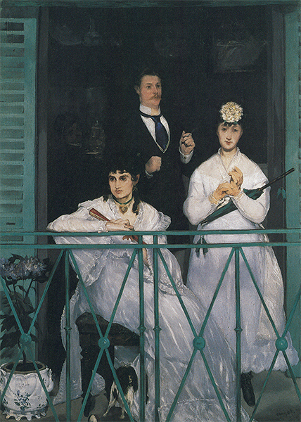
334 Édouard Manet, El balcón, 1868-1869. Óleo sobre lienzo, 169 x 125 cm; Museo de Orsay, París.
Las nuevas teorías no se refirieron tan sólo al manejo del color al aire libre (à plein air), sino también a las formas en movimiento. La ilustración 335 muestra una de las litografías de Manet (sistema de reproducir dibujos haciéndolos directamente sobre piedra, inventado a inicios del siglo XIX). A primera vista no podemos advertir sino un confuso garabato; pero se trata de una carrera de caballos. Manet nos quiso facilitar una impresión de luz, velocidad y movimiento, no ofreciendo más que un simple indicio de las formas surgiendo de la confusión. Los caballos corren hacia nosotros a toda velocidad y las tribunas están llenas de una agitada multitud. El ejemplo nos muestra de la manera más clara posible cómo Manet evitó que sus conocimientos le influyeran a la hora de representar la forma. Ninguno de los caballos tiene cuatro patas, sencillamente porque no las vemos todas en una ojeada momentánea a una escena semejante; y tampoco podemos ver con detalle a los espectadores. Unos catorce años antes, el pintor inglés William Powell Frith (1819-1909) pintó Día de Derby (ilustración 336), cuadro muy popular en la época victoriana por el humor dickensiano con el que representaba los personajes e incidentes del acontecimiento. Un cuadro de tal índole muestra su encanto principalmente por los incidentes personales que nosotros podemos imaginar cuando estudiamos directamente los diversos grupos. Pero en la vida real sólo podemos centrar la atención de nuestros ojos en un punto, quedando todos los demás como una confusión de formas inconexas. Podemos saber cómo son, pero no verlos. En este sentido, la litografía de Manet de una carrera hípica es, en realidad, mucho más verdadera que el cuadro del humorista victoriano, puesto que nos traslada por un instante al bullicio y la agitación de la escena presenciada por el artista, de la cual registró tan sólo lo que podía ver en aquel instante.
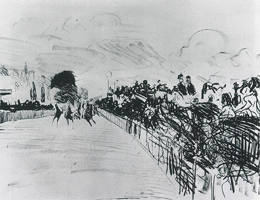
335 Édouard Manet, Carreras en Longchamp, 1865. Litografía, 36,5 x 51 cm.
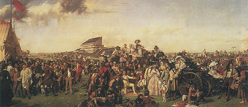
336 William Powell Frith, Día de Derby, 1856-1858. Óleo sobre lienzo, 101,6 x 223,5 cm; Tate Gallery, Londres.
Entre los pintores que se unieron a Manet y contribuyeron a desarrollar estas ideas hubo un joven pobre y obstinado de El Havre, Claude Monet (1840-1926). Fue Monet el que impulsó a sus amigos a abandonar el estudio y a no dar ni una sola pincelada sino delante del natural. Tuvo un barquichuelo equipado como estudio para poder observar las variaciones y los efectos del panorama del río. Manet, que fue a visitarle, quedó convencido de la honradez del sistema del joven y le rindió tributo pintando su retrato mientras trabajaba en un cuadro en este estudio al aire libre (ilustración 337). Este retrato constituye al propio tiempo un ejercicio según la nueva modalidad defendida por Monet. La idea de éste, según la cual toda reproducción de la naturaleza debía necesariamente concluirse sobre el terreno, no sólo exigía un cambio de costumbres y un menosprecio de la comodidad, sino que conducía a nuevos procedimientos técnicos. La naturaleza o el motivo cambian a cada minuto, al pasar una nube ante el sol o al provocar reflejos sobre el agua el paso del viento. El pintor que confía en captar un aspecto característico no tiene tiempo para mezclar y unir sus colores aplicándolos en capas sobre una preparación oscura, como habían hecho los viejos maestros; debe depositarlos directamente sobre la tela en rápidas pinceladas, preocupándose menos de los detalles que del efecto general del conjunto. Fue esta falta de acabamiento, esta aparentemente rápida disposición la que enfureció literalmente a los críticos. Incluso cuando ya Manet había conquistado cierta aceptación de sus retratos y composiciones de figura por parte del público, los jóvenes paisajistas en torno a Monet encontraban extremadamente difícil conseguir que sus cuadros fueran aceptados en el Salón. En consecuencia, se agruparon en 1874 y organizaron una exposición en el estudio de un fotógrafo; había allí un cuadro de una bahía vista a través de la neblina del amanecer, al que su autor, Claude Monet, le puso el título de Impresión: amanecer. Un crítico encontró este título particularmente risible, y se refirió a todo el grupo de aquellos artistas llamándoles impresionistas. Quería dar a entender que estos pintores no procedían mediante un conocimiento cabal de las reglas de su arte, y que la impresión de un momento que realizaban no era suficiente para que la obra recibiera el nombre de cuadro. El marbete tuvo éxito; su intención burlesca fue pronto olvidada, del mismo modo que la significación peyorativa de términos como gótico, barroco o manierismo se ha olvidado ya. Después de algún tiempo, el propio grupo de amigos aceptó el calificativo de impresionistas, y con él han sido conocidos desde entonces.
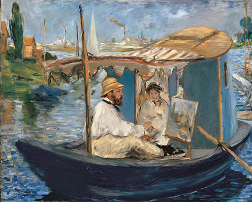
337 Édouard Manet, Claude Monet pintando en su barco-estudio, 1874. Óleo sobre lienzo, 82,5 x 100,5 cm; Pinacoteca Moderna, Munich.
Resulta interesante leer algunos comentarios de prensa con que fue recibida la primera exposición de los impresionistas. Un respetable crítico escribía en 1876:
La rue Le Peletier es un lugar de desastres. Después del incendio de la Opera ha ocurrido otro accidente en ella. Acaba de inaugurarse una exposición en el estudio de Durand-Ruel que, según se dice, se compone de cuadros. Ingresé en ella y mis ojos horrorizados contemplaron algo espantoso. Cinco o seis lunáticos, entre ellos una mujer, se han reunido y han expuesto allí sus obras. He visto personas desternillándose de risa frente a estos cuadros, pero yo me descorazoné al verlos. Estos pretendidos artistas se consideran revolucionarios, «impresionistas». Cogen un pedazo de tela, color y pinceles, lo embadurnan con unas cuantas manchas de pintura puestas al azar y lo firman con su nombre. Resulta una desilusión de la misma índole que si los locos del manicomio recogieran piedras de las márgenes del camino y se creyeran que habían encontrado diamantes.
No fue solamente la técnica de pintar la que indignó de este modo a los críticos, sino también los temas elegidos por estos pintores. En el pasado se solicitaba de los pintores que reprodujeran un rincón de la naturaleza que fuese, en general, pintoresco. Pocas personas advertían que esta solicitud tenía algo de absurda. Llamamos pintorescos a aquellos temas que se parecen a lo que hemos visto antes en los cuadros. Si los pintores tuvieran que limitarse a estos motivos se verían obligados a repetirse interminablemente. Fue Claude Lorrain el que convirtió en pintorescas las ruinas romanas (ilustración 255), y Jan van Goyen quien convirtió en temas los molinos de viento holandeses (ilustración 272). Constable y Turner en Inglaterra, cada uno en su propio estilo, descubrieron nuevos temas para el arte. Tormenta de nieve: Un vapor a la entrada del puerto, de Turner (ilustración 323), fue un asunto tan nuevo como la manera en que fue tratado. Claude Monet conoció las obras de Turner; las había visto en Londres, donde residió durante la guerra francoprusiana (1870-1871), y ellas le confirmaron en su convicción de que los mágicos efectos de la luz y el aire importaban más que el tema de un cuadro. Sin embargo, una obra como la de la ilustración 338, que presenta una estación de ferrocarril de París, ofendió a los críticos, que la consideraron una pura insolencia. Se trata de una auténtica impresión de una escena de la vida cotidiana. Monet no se interesó por la estación de ferrocarril, sino que le fascinaron los efectos de la luz filtrándose a través del techo de cristal sobre las nubes de vapor, así como las formas de las máquinas y vagones surgiendo de la confusión. Sin embargo, no hay nada de casual en este testimonio gráfico de un pintor. Monet armonizó sus tonos y colores tan esmeradamente como un paisajista del pasado.
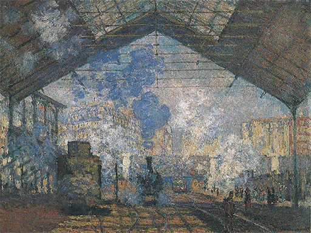
338 Claude Monet, La estación de Saint-Lazare, 1877. Óleo sobre lienzo, 75,5 x 104 cm; Museo de Orsay, París.
Los pintores pertenecientes a este grupo juvenil de los impresionistas aplicaron sus nuevos principios no solamente al paisaje sino también a cualquier escena de la vida real. La ilustración 339 muestra un cuadro de Pierre Auguste Renoir (1841-1919) que representa un baile al aire libre en París y que fue pintado en 1876. Cuando Jan Steen (ilustración 278) representó una escena de diversión análoga, se esforzó en reproducir los diversos tipos humorísticos del pueblo. Watteau, en sus imaginarias escenas de festividades aristocráticas (ilustración 298), quiso plasmar el modo de ser de una existencia sin cuidados. Hay algo de ambos en Renoir, pues también él tuvo ojos para las manifestaciones de una muchedumbre alegre y, a la par, se deleitó creando una belleza gozosa. Pero su interés principal reside en otro aspecto: desea captar la mezcla de brillantes colores y estudiar el efecto producido por la luz del sol sobre el torbellino de la multitud. Incluso comparado con el cuadro en que Manet pintó a Monet en su barca, el de Renoir parece abocetado y sin terminar. Tan sólo las cabezas del primer término muestran cierta cantidad de detalles, pero incluso éstos están pintados del modo menos convencional y más atrevido. Los ojos y la frente de la mujer sentada están en sombra, mientras que el sol se refleja sobre sus labios y su cutis. Su vistoso traje está pintado con unas cuantas pinceladas sueltas, más audaces aún que las de Frans Hals (ilustración 270) o Velázquez (ilustración 267). Pero éstas son las figuras sobre las que se centra nuestra mirada. Más allá, las formas se disuelven cada vez más en la luz del sol y en el aire. Recordemos a Francesco Guardi (ilustración 290) y su manera de sugerir las figuras de los remeros venecianos con unas cuantas motas de color. Al cabo de más de un siglo nos resulta difícil comprender por qué estos cuadros provocaron tantas tormentas de indignación y de burla. Advertimos sin dificultad que el aparente abocetamiento no tenía nada que ver con el descuido, sino que era fruto de una gran pericia artística. Si Renoir hubiera pintado cada pormenor, el cuadro hubiera resultado opaco y falto de vida. Recordemos que un conflicto semejante ya se les había presentado anteriormente a los artistas, en el siglo XV, cuando descubrieron por vez primera cómo reflejar la naturaleza. Recordemos que las mismas victorias del naturalismo y de la perspectiva hicieron que sus figuras pareciesen rígidas y toscas, y que solamente el genio de Leonardo fue capaz de vencer esta dificultad dejando de propio intento que las formas se fundiesen en sombras oscuras, procedimiento que se denominó sfumato (ilustraciones 193 y 194). El descubrimiento de que las sombras oscuras de esta clase, que empleó Leonardo para modelar, no se producen nunca a la luz del sol y al aire libre, fue el que cerró este camino tradicional a los impresionistas. De aquí que tuvieran que ir más allá de lo que cualquier otra generación anterior había hecho en la intencionada descomposición de los contornos. Ellos supieron que el ojo humano es un maravilloso instrumento. No hay más que darle la dirección adecuada y creará la forma total que sabe que ha de estar allí. Pero debe saberse cómo contemplar tales cuadros. Las gentes que visitaron la primera exposición impresionista evidentemente hundieron sus narices en los cuadros y no vieron más que una mezcolanza de pinceladas fortuitas, siendo éste el motivo de que creyeran que aquellos pintores debían estar locos.
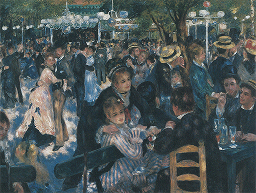
339 Pierre Auguste Renoir, Baile del Moulin de la Galette, 1876. Óleo sobre lienzo, 130 x 175 cm; Museo de Orsay, París.
Ante un cuadro como el de la ilustración 340, en el cual uno de los más viejos y sistemáticos campeones de este movimiento, Camille Pissarro (1830-1903), evocó la impresión de un bulevar de París a pleno sol, estas gentes ofendidas preguntarían: «¿Es que yo aparezco así al pasear por el bulevar? ¿Es que pierdo mis piernas, mis ojos y mi nariz y me convierto en una especie de bulto informe?» De nuevo su conocimiento de lo que «pertenecía» a un hombre se interponía entre su juicio y lo que vemos realmente.
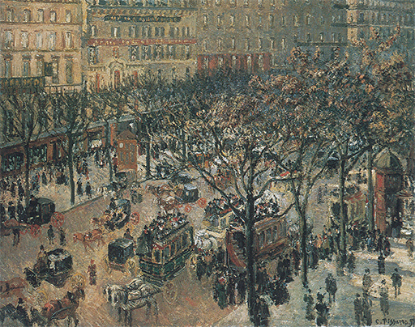
340 Camille Pissarro, Mañana soleada en el boulevard des Italiens, 1897. Óleo sobre lienzo, 73,2 x 92,1 cm; colección Chester Dale; Galería Nacional de Arte, Washington.
Tuvo que pasar algún tiempo para que el público aprendiera a ver un cuadro impresionista retrocediendo algunos metros y disfrutando del milagro de ver esas manchas embrolladas colocarse súbitamente en su sitio y adquirir vida ante nuestros ojos. Conseguir este milagro y transferir la verdadera experiencia visual del pintor al espectador fue el verdadero propósito de los impresionistas.
La conciencia de la nueva libertad y del nuevo poder que estos artistas tuvieron debió compensarles en gran medida de las burlas y la hostilidad con que tropezaron. Súbitamente, todo ofreció temas idóneos al pincel del artista; dondequiera que hiciese su aparición una bella combinación de tonos, una configuración interesante de colores y formas, un sugestivo y alegre resplandor de sol y de sombras coloreadas, podía sentarse ante su caballete y tratar de recoger su impresión sobre la tela. Todos los viejos espantajos como los temas graves, las composiciones armónicas y el dibujo correcto se dejaron de lado. El artista no tenía que responder ante nadie sino ante sus propias sensaciones de lo que pintaba y cómo lo pintaba. Considerando esta lucha, que ya se remontaba a dos o más generaciones, quizá parezca menos sorprendente que las teorías de estos jóvenes artistas encontrasen mayor oposición de la que ellos mismos imaginaron en un principio. Pero por dura y amarga que hubiese sido la batalla, el triunfo del impresionismo fue rotundo. Incluso algunos de estos jóvenes rebeldes, en especial Monet y Renoir, vivieron lo suficiente como para recoger los frutos de su victoria y llegaron a ser famosos y respetados en toda Europa. Presenciaron el ingreso de sus obras en los museos y cómo eran codiciadas por los coleccionistas adinerados. Además, esta transformación impresionó profundamente, lo mismo a los artistas que a los críticos. Quienes de éstos se burlaron del impresionismo demostraron haberse equivocado plenamente. Si hubieran adquirido aquellos cuadros en vez de mofarse de ellos, se habrían enriquecido. Con ello, la crítica sufrió un duro golpe, del que nunca se recuperaría. La lucha de los impresionistas se convirtió en una especie de leyenda áurea de todos los innovadores en arte, quienes en lo sucesivo podrían acogerse siempre a aquella manifiesta incapacidad del público para admitir nuevos métodos. En cierto modo, este evidente fracaso es tan importante en la historia del arte como el triunfo final del programa impresionista.
Tal vez no hubieran conseguido los pintores tan rápida y cabalmente esta libertad si no hubiera sido por dos aliados que contribuyeron a que los hombres del siglo XIX vieran el mundo con ojos distintos. Uno de estos aliados fue la fotografía. En un principio, este invento se empleó principalmente para los retratos. Pero se necesitaba una prolongada exposición, y los que posaban para sus fotógrafos tenían que mantenerse en una postura rígida que fueran capaces de sostener largo rato. La evolución de la cámara portátil y de la instantánea comenzó hacia los mismos años que vieron la aparición de la pintura impresionista. La cámara ayudó a descubrir el encanto de las vistas fortuitas y los ángulos de visión inesperados. Además, el desarrollo de la fotografía obligó a los artistas a ir más allá en sus experimentos y exploraciones. La pintura no necesitaba desempeñar una tarea que un ingenio mecánico podía realizar mejor y a menos coste. No tenemos que olvidar que, en el pasado, el arte de la pintura sirvió para cierto número de fines utilitarios. El pintor era un hombre que podía desafiar la naturaleza efímera de las cosas y conservar el aspecto de cualquier objeto para la posteridad. No sabríamos cómo era el dodó si un pintor holandés del siglo XVII no hubiera empleado su capacidad en reproducir un ejemplar de este pájaro poco antes de que la familia a que pertenecía se extinguiera. En el siglo XIX, la fotografía estuvo a punto de desposeer al arte de la pintura de esta función, ocasionando un perjuicio tan serio a la situación del artista como lo había sido el de la abolición de las imágenes religiosas por parte del protestantismo. Antes de este invento, casi todas las personas que se tuvieran en algo posaban para sus retratos al menos una vez en el curso de sus vidas. Ahora, era raro quien soportase esta dura prueba, a menos que quisiera complacer o ayudar a un pintor amigo. Así sucedió que los artistas se vieron impulsados incesantemente a explorar regiones a las que la fotografía no podía seguirles. En efecto, el arte moderno no habría llegado a lo que es sin el choque de la pintura con este invento.
El segundo aliado que los impresionistas encontraron en su atrevida persecución de nuevos temas y nuevos esquemas de color fue la estampa coloreada japonesa. El arte de Japón se desarrolló por influjo del arte chino y continuó dentro de sus mismas líneas durante casi un milenio. En el siglo XVIII, sin embargo, quizá bajo el influjo de grabados europeos, los artistas japoneses abandonaron los temas tradicionales del arte de Lejano Oriente y eligieron escenas de la vida popular como tema para sus grabados en madera coloreados, en los que aparecen conciliados una gran audacia de concepción y una maestría técnica perfecta. Los coleccionistas japoneses no tuvieron en mucha estima estas producciones de poco coste, pues preferían la austeridad del estilo tradicional. Cuando Japón se vio obligado, a mediados del siglo XIX, a entrar en relaciones comerciales con Europa y América, esas estampas se emplearon a menudo para envolver y para rellenar paquetes, y se las podía encontrar a muy bajo precio en las tiendas de té. Artistas del círculo de Manet fueron los primeros en apreciar su belleza y en coleccionarlas ávidamente. Aquí hallaron una tradición no corrompida por aquellas reglas académicas y aquellas rutinas de las que se esforzaban en zafarse los pintores franceses. Las estampas japonesas les ayudaron a ver cuánto quedaba en ellos todavía de los formalismos europeos sin que se apercibieran de ello. Los japoneses tuvieron preferencia por las representaciones de aspectos insólitos y espontáneos del mundo. Su maestro, Hokusai (1760-1849), representaría el monte Fuji visto como por casualidad detrás de una cisterna de bambú (ilustración 341); Utamaro (1753-1806) no titubeó en mostrar algunas de sus figuras cortadas por el margen del grabado o por una cortina (ilustración 342). Fue este atrevido desdén de una regla elemental de la pintura europea lo que sugestionó a los impresionistas. Descubrieron en esta regla un último reducto del antiguo predominio del conocimiento sobre la visión. ¿Por qué motivo tenían que aparecer siempre en un cuadro las partes importantes de cada figura de una escena?
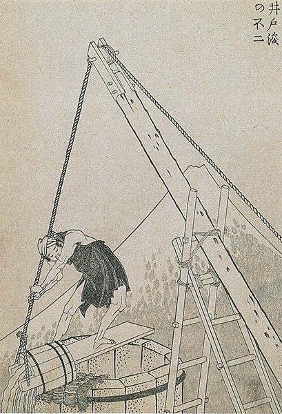
341 Katsushika Hokusai, El monte Fuji asomando tras una cisterna, 1835. Grabado de la serie Cien vistas del monte Fuji, 22,6 x 15,5 cm.
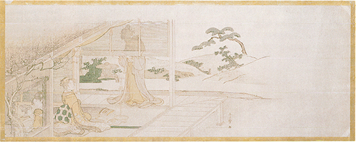
342 Kitagawa Utamaro, Subiendo una persiana para admirar la flor del ciruelo, finales de la década de 1790. Grabado, 19,7 x 50,8 cm.
El pintor más profundamente impresionado por estas posibilidades fue Edgar Degas (1834-1917). Degas era algo mayor que Monet y Renoir; perteneció a la generación de Manet y, como él, se mantuvo un tanto apartado del grupo impresionista, aunque simpatizó con la mayoría de sus propósitos. Degas se interesó apasionadamente por el diseño y el dibujo —sintió gran admiración por Ingres—, y en sus retratos (ilustración 343) quiso plasmar la impresión del espacio y la solidez de las formas vistas desde los ángulos más insospechados.
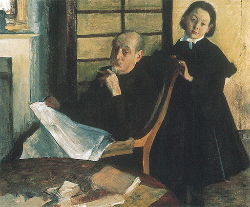
343 Edgar Degas, Henri Degas y su sobrina Lucie, 1876. Óleo sobre lienzo, 99,8 x 119,9 cm; Instituto de Arte de Chicago.
También fue por este motivo por lo que le gustó ir a buscar sus temas en los ballets más que en la naturaleza. Observando los ensayos, Degas tuvo ocasión de ver cuerpos en todas las actitudes y desde todos los ángulos. Mirando el escenario desde arriba, vería a las muchachas danzar, o descansar, y estudiaría los escorzos difíciles y los efectos de la luz de las candilejas en el modelado de la forma humana. La ilustración 344 muestra uno de los apuntes al pastel de Degas. La composición acaso no resulte muy natural en apariencia. De alguna de las bailarinas sólo vemos las piernas; de otras, el cuerpo solamente. Una sola figura está vista por completo, y, aun así, en una postura intrincada y difícil de examinar. La vemos desde arriba, con la cabeza hacia adelante y con la mano izquierda sujetándose el tobillo, en un estado de relajamiento. No existe nada anecdótico en los cuadros de Degas; a él no le interesaron las danzarinas porque fueran muchachas bonitas, ni parece que se preocupara por sus estados de ánimo, ya que las observaba con la misma desinteresada objetividad con que contemplaron los impresionistas los paisajes en torno a ellos. Lo que le importaba era el juego de la luz y la sombra sobre las formas humanas, y ver de qué manera podía lograr sugerir el movimiento o el espacio. Demostró al mundo académico que los nuevos principios de los artistas jóvenes, lejos de ser incompatibles con el dibujo perfecto, planteaban nuevos problemas que sólo el más consumado maestro en el dibujo podría resolver.
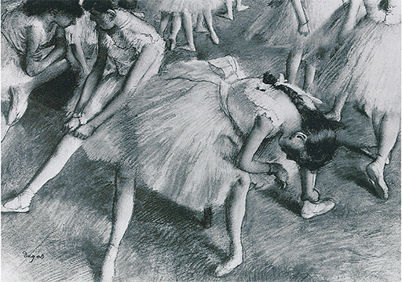
344 Edgar Degas, Esperando la entrada, 1879. Pastel sobre papel, 99,8 x 119,9 cm; colección particular.
Los principios esenciales del nuevo movimiento sólo podían hallar expresión completa en el campo de la pintura; pero también la escultura se lanzó rápidamente a la lucha por o contra el modernismo. El gran escultor francés Auguste Rodin (1840-1917) nació el mismo año que Monet, y como había estudiado apasionadamente la escultura clásica y la de Miguel Ángel, supo ser nuevo sin provocar un conflicto fundamental entre él y el arte tradicional. Rodin, en efecto, se convirtió en seguida en un maestro reconocido y gozó entre el público de tanta fama, si no más todavía, que cualquier otro artista de su tiempo. Pero incluso sus obras fueron objeto de violentas discusiones entre los críticos, siendo confundidas a veces con las de los rebeldes impresionistas. La razón de ello se pone en claro cuando se contempla alguno de sus retratos (ilustración 345). Al igual que los impresionistas, Rodin desdeñó la apariencia superficial del acabado; como ellos, prefirió dejar algo a la imaginación del espectador. En ocasiones, incluso dejó parte de la piedra sin tocar para ofrecer la impresión de que su figura estaba surgiendo del caos y tomando forma. A la generalidad del público esto le pareció de una excentricidad irritante, cuando no pura dejadez. Sus objeciones fueron las mismas que ya se habían dirigido contra Tintoretto. Para esas personas, la perfección artística seguía consistiendo en que todo debía quedar bien rematado y pulido. Al desdeñar estos mezquinos convencionalismos para expresar su visión del acto divino de la creación (ilustración 346), Rodin contribuía a afianzar el derecho que Rembrandt había reclamado de dar por terminado su trabajo cuando hubiera logrado sus objetivos artísticos. Puesto que nadie podía decir que su manera de proceder se debiese a ignorancia, su influjo facilitó el camino para la aceptación del impresionismo más allá del estrecho círculo de sus admiradores franceses.
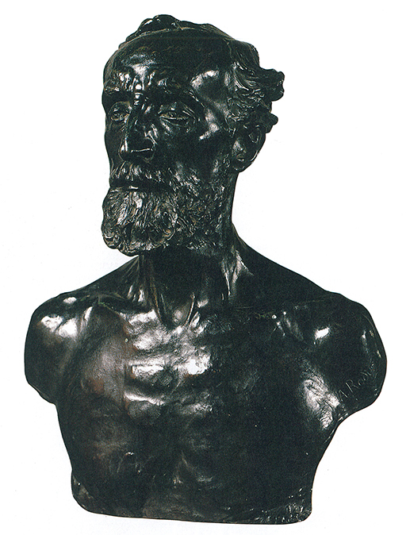
345 Auguste Rodin, El escultor Jules Dalou, 1883. Bronce, 52,6 cm de altura; Museo Rodin, París.
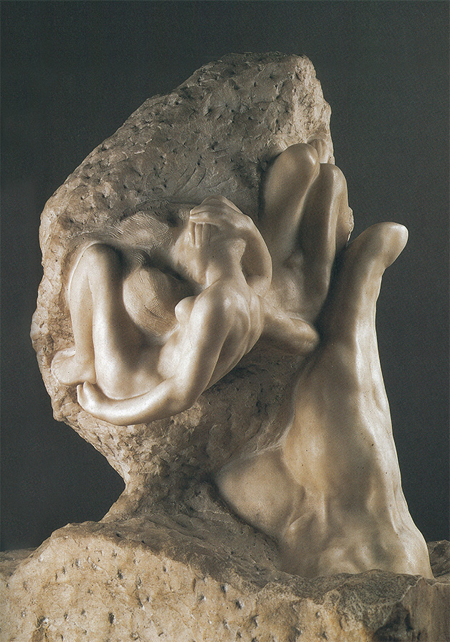
346 Auguste Rodin, La mano de Dios, h. 1898. Mármol; 92,9 cm de altura; Museo Rodin, París.
El movimiento impresionista hizo de París el centro artístico de Europa. Artistas de todo el mundo fueron allí a estudiar, asimilando los nuevos descubrimientos, así como la nueva actitud del artista que hacía de él un rebelde contra los prejuicios y convencionalismos del mundo burgués. Uno de los más influyentes apóstoles de este evangelio fuera de Francia fue el estadounidense James Abbott McNeill Whistler (1834-1903), quien tomó parte en la primera batalla del nuevo movimiento. Whistler expuso con Manet en el Salón de los Rechazados de 1863, y compartió el entusiasmo de los pintores colegas suyos por las estampas japonesas. No fue un impresionista en el sentido estricto de la palabra, sino a la manera de Degas o Rodin, pues su preocupación principal no se dirigió a los efectos de luz y color, sino más bien a la composición de esquemas delicados. Lo que tenía en común con los pintores parisinos era su desprecio por el interés que mostraba el público hacia las anécdotas sentimentales. Subrayó que el objeto de la pintura no residía en el tema sino en la manera de ser transferido éste a formas y colores. Uno de los cuadros más famosos de Whistler, y acaso uno de los más populares que hayan existido, es el retrato de su madre (ilustración 347).
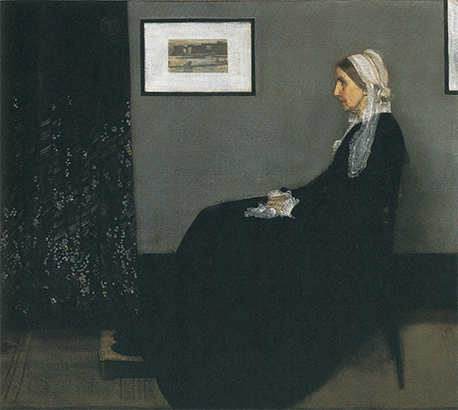
347 James Abbott McNeill Whistler, Composición en gris y negro: Retrato de la madre del artista, 1871. Óleo sobre lienzo, 144,3 x 165,2 cm; Museo de Orsay, París.
Resulta significativo que el título con el cual exhibió Whistler este cuadro en 1872 fuera Composición en gris y negro, desviándose así de cualquier sugerencia de interés literario o de sentimentalismo. Realmente, la armonía de formas y colores que se propuso no se halla en contradicción con el tema. El esmerado equilibrio de formas es el que confiere al cuadro su calidad apacible, y los tonos de su gris y negro, yendo de los cabellos y el vestido de la señora a la pared y el marco, realzan la sensación de soledad resignada que hace tan atractivo el cuadro. Es chocante constatar que el autor de cuadros tan sensibles y delicados se distinguiera por sus maneras provocativas y sus prácticas de lo que él llamaba El agradable arte de hacerse de enemigos, tal como reza el título de una serie suya de notas sobre arte. Se estableció en Londres y allí se dispuso a romper lanzas en pro del arte moderno sin casi ayuda de nadie. Su costumbre de rotular sus cuadros con los títulos más excéntricos y su desprecio por los convencionalismos académicos le concitaron la ira de John Ruskin (1819-1900), el famoso crítico que había patrocinado a Turner y a los prerrafaelistas. En 1877, Whistler expuso una serie de nocturnos de estilo japonés (ilustración 348), por cada uno de los cuales pedía 200 guineas. Ruskin escribió: «Nunca hubiera imaginado que un mequetrefe pudiera pedir 200 guineas por arrojar un pote de pintura al rostro del público.» Whistler le demandó por difamación y el caso no hizo más que ahondar las diferencias existentes entre el criterio artístico del público y el de los artistas. Pronto salió a relucir la cuestión de los acabados, y Whistler fue de nuevo interrogado acerca de si realmente había pedido aquella suma «por dos días de trabajo», a lo que él replicó: «No; la he pedido por los conocimientos de toda una vida.»
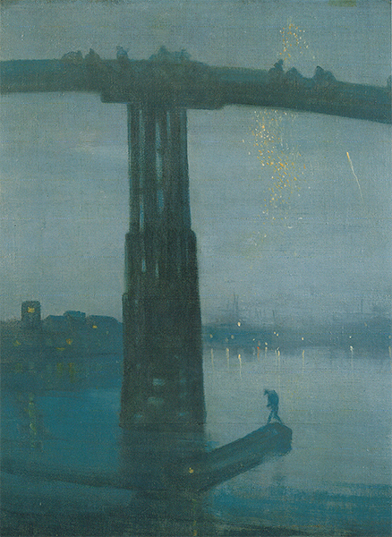
348 James Abbott McNeill Whistler, Nocturno: Azul y oro. Puente de Old Battersea, h. 1872-1875. Óleo sobre lienzo, 66,6 x 50,2 cm; Tate Gallery, Londres.
Resulta sorprendente advertir, cuando se reflexiona acerca de ello, cuánto tenían realmente en común las dos partes de este desgraciado litigio. Ambas se mostraban insatisfechas de la fealdad y pobreza del ambiente que les rodeaba; pero mientras Ruskin, como hombre de edad avanzada, confió en llevar a sus compatriotas a un mayor conocimiento de la belleza recurriendo a su sentido de la moral, Whistler se convirtió en un adalid del llamado movimiento estético que trataba de hacer ver que la sensibilidad artística es lo único que merece la pena tomarse en serio en la vida. Ambos puntos de vista ganaron en importancia a finales del siglo XIX.
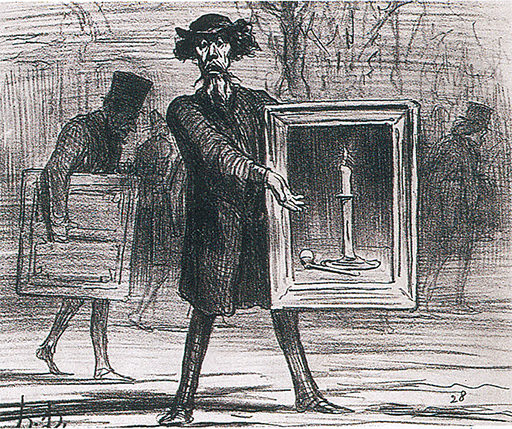
Honoré Daumier, El pintor rechazado exclamando: «¡Y no me han aceptado esto, estúpidos ignorantes!», 1859. Litografía, 22,1 x 27,2 cm.